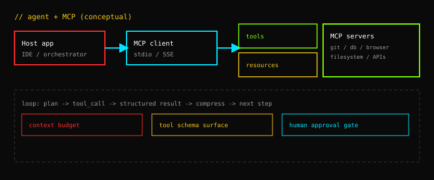

MCP Is Not “Function Calling With Extra Steps”
Function calling gave models hands. The Model Context Protocol gives those hands a workshop — standardized sockets for tools, readable resources, and composable servers that outlive any single chat session. If you are building agents in 2026, the design question is no longer “can the model call an API?” but “who owns the tool graph, the context budget, and the blast radius when the model is wrong?”

What changed after function calling
OpenAI’s function calling (2023) and parallel tool-use APIs normalized a pattern: the model emits structured JSON describing an intended action; your runtime executes it and feeds the result back. That unlocked reliable calculators, SQL, and internal APIs. It also created a maintenance cliff — every integration was a one-off schema in application code, every new data source required prompt surgery, and every IDE fork reinvented the same GitHub + filesystem + search trio.
Anthropic’s Model Context Protocol (MCP), open-sourced in late 2024, treats capabilities as pluggable servers speaking a shared wire format (JSON-RPC over stdio or SSE). Host applications implement an MCP client; capabilities live in MCP servers. The split matters: servers can ship independently, version independently, and run under different trust boundaries — while the host controls which servers are mounted for a given task.
That is the cutting-edge shift. Prompt engineering optimized tokens inside one blob; tool engineering optimizes the surface area the model can touch — and how observations re-enter context without drowning everything else.
The three primitives (and why each exists)
Tools
Tools are model-initiated actions with JSON Schema inputs — spiritually similar to function calling, but discovered at runtime from the server’s tools/list handshake instead of hard-coded per app. Good tool design is ruthlessly narrow: one verb, typed fields, enums instead of free text where possible. Wide “do anything” tools increase hallucinated arguments and recovery loops.
Resources
Resources are application-initiated or user-pinned context: files, log tails, schema snapshots, ticket JSON. They address a failure mode of pure tool loops — the model never knew a document existed because it never thought to fetch it. Resources let hosts preload or let users attach durable artifacts without stuffing the system prompt.
Prompts
Prompts are parameterized templates servers can expose — useful for repeatable workflows (“generate migration plan from schema resource”). They are underrated: they move tribal prompt lore out of Notion and into versioned server code.
Production dynamics nobody puts in the README
Context inflation. Each tool result returns verbatim into the window. A browser scrape, a 400-line JSON API response, or a recursive directory listing can erase an hour of reasoning budget in one turn. Production hosts need compression policies: truncate with structure, summarize with a cheap model, or store blobs out-of-band and pass handles.
Tool budget. Listing 80 tools “so the model can choose” often hurts more than it helps — selection accuracy drops as cardinality rises. The 2026 pattern is dynamic mounting: enable 5–12 tools per sub-task, swap servers when the phase changes (research → edit → verify).
Blast radius. A model with shell and network tools is a remote-code-execution surface. MCP does not solve security; it standardizes plumbing. Serious deployments pair least-privilege servers, optional human approval on mutating tools, and separate read vs write servers so read-only research cannot accidentally call git push.
Latency stacks. One “simple” user question can chain five tool calls across three servers. Without parallelization and aggressive caching of idempotent reads, agents feel broken compared to chat. Treat p95 tool latency as a product metric, not an afterthought.
MCP vs ad-hoc function calling (when each wins)
- Ad-hoc functions — fastest for one product, one backend, <10 tools, single team. You control schemas in-repo; no extra process management.
- MCP — wins when multiple hosts (IDE, CLI, automations) must share capabilities; when third-party tool packs matter; when you want servers sandboxed per domain (finance server, infra server) with different credentials.
- Hybrid — common in 2026: core business APIs stay native; MCP wraps everything episodic (browser, docs search, issue trackers).
Interoperability is improving — OpenAI, Google, and open-source agent frameworks now document MCP client support — but you should still assume schema drift across model families. Test tool-call accuracy per model; do not trust zero-shot parity between providers.
A minimal loop that actually ships
Frameworks hide complexity, but the control flow is stable:
while not done:
response = model.chat(messages, tools=mounted_tools)
if response.tool_calls:
for call in response.tool_calls:
result = mcp.invoke(call.server, call.name, call.arguments)
messages.append(tool_result(call.id, compress(result)))
else:
done = TrueThe engineering effort sits in compress(result), mounted_tools, and termination guards — not in parsing JSON. Agents fail in production on unbounded loops and un-summarized observations long before they fail on reasoning.
Context engineering > bigger windows
Long-context models (128k–1M tokens) tempted teams to skip retrieval and dump everything. Field reports — and benchmarks like Lost in the Middle — still show attention degradation: models miss needles in haystacks, especially in the middle of huge prompts. MCP plus disciplined resources is a bet on curated ingress: attach the right 2–8k tokens per phase instead of the available 200k.
The frontier question for 2026 is not “how much context can we afford?” but “what is the minimum sufficient context for this tool subgraph?” That is the same optimization graph database people solved with query plans — except the planner is an LLM and the cost function is dollars plus latency plus wrong-tool risk.
Checklist before you mount another server
- Can this capability be a read-only server first?
- Does each tool have a single happy path and explicit error strings the model can react to?
- What is the max bytes returned per call — and what summarizer runs if exceeded?
- Which tools require human approval — and can the UI show diffs before apply?
- How do you log tool traces for replay without logging secrets?
- What is the fallback when the model loops — step cap, duplicate-call detection, model swap?
Where this is heading
Expect MCP-shaped boundaries to become the default “USB-C for agents” — not because one protocol is magical, but because the industry needed a **stable port** between hosts and capabilities. The differentiator moves up-stack: orchestration quality, memory tiers, evaluation harnesses, and product UX around partial autonomy.
If you are writing agents today, spend less time polishing monolithic system prompts and more time designing **tool graphs** with explicit phases, tight schemas, and measurable success criteria per phase. That is the difference between a demo that calls GitHub once and a system that can work for an afternoon without ruining your repo.